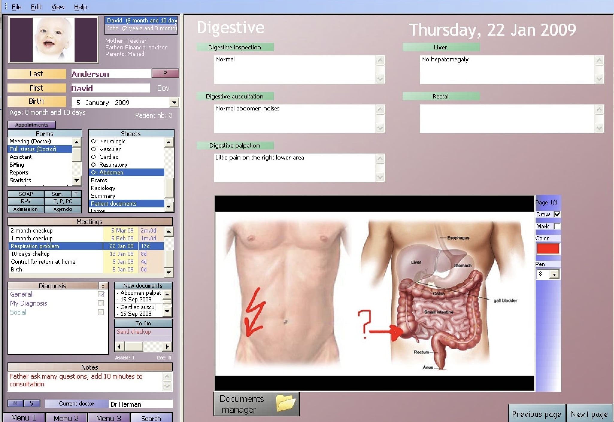
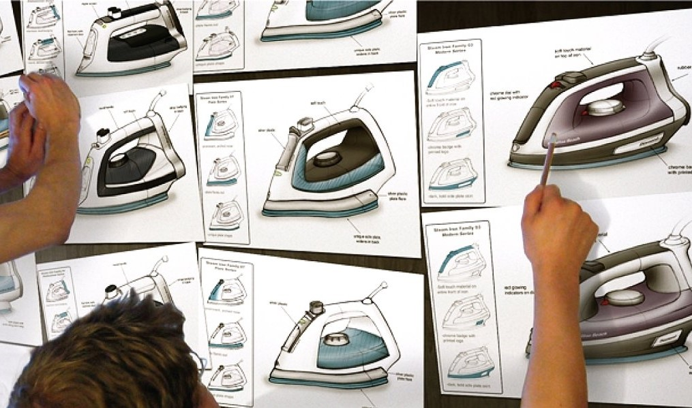

Pooyan Doozandeh, PhD

Greater Boston, MA, USA
pooyan.doozandeh@gmail.com
I do research on human behavior for applied reasons. I inform the design of interfaces and products to match human behavioral characteristics.
To read my opinions about some areas of my interest, see the Opinions page.
Teaching Experience
2021 – 2022: I was an instructor in Penn State College of Information Sciences and Technology (IST) for a course with the title of Training and Technology. Videos of some lectures are available here.
2016 – 2021: I was a teaching assistant in Penn State IST for several courses such as Foundations of Human-Centered Design and Statistics. Prior to joining Penn State (from 2016 to 2018), I was a teaching assistant in Lehigh University’s Psychology Department for courses in Psychology and Cognitive Science.
2015 – 2016: I was a high school instructor, teaching Introduction to Programming with C# to senior high school students.
Hobbies
I listen to classical music, work on my car and motorcycle, go hiking, create video content and short documentaries, read Persian poetry (Hafez), write articles, travel, and read philosophy books in my free time. You can learn more about my personal taste in the Opinions page.
Last updated on August 2024
Experience
Research on Electronic Health Record System
|

An Electronic Health Record Software System |
2023 – present: As a Sr. UX/Human Factors Researcher in a contract with the Department of Veterans Affairs, I investigated the implementation of a new nationwide electronic health record system (Oracle Millennium) in Veterans’ hospitals. The goal was to understand the usability and user experience of the new system by deriving insights from users including physicians, nurses, pharmacists, psychologists, and other healthcare professionals (through Visionary Consulting Partners LLC.).
Product Design and Packaging Research
|

Designing a Clothing Iron |
2022 – 2023: As a part of the design consultancy of Product Ventures Ltd. I investigated consumers' acceptance of design concepts and prototypes. Clients were companies that produced various types of products, including kitchen appliances, drinking bottles, gym equipment, and food packages. We recruited a sample of consumers, presented them with prototypes, and investigated their reaction, the reasons behind their choices, and how they used products. I was trained and certified from the Burke Institute as a focus group moderator to lead the interviews with consumers.
Designing Online Job Descriptions

A Job Video |
2020 – 2022: I investigated the possible use of video on creating online job descriptions [11]. The question was whether embedding a short video of a job and a day of life of an employee could influence job-seekers' attitude toward that job and organization, and whether it could have any effect on job-seekers' decision to pursue employment in that job and organization. The results from this research informed hiring managers of whether and how to use videos in online job descriptions.
Remote Voice Navigation
|
Voice-Navigated System for a Visually-Impared Person |
2020 - 2021: In a collaborative project between Aira Tech Corp. and Penn State University, I helped in improving the visual interfaces of agents who provided remote voice guidance to people with visual impairments.
Designing Training Simulators

A Simulator Used to Train Truck Driving |
2018 – 2022: In a collaboration with Charles River Analytics Inc. I investigated the effect of the realism of training materials (or simulation fidelity) on the effectiveness of training (or transfer). I conducted a series of studies to determine the relationship between fidelity and transfer [7, 8, 10]. Then, I proposed a method that systematized the use of experts' performance in designing training simulators. The method used the videorecording of experts at work to model their performance, and the model could directly guide the design of training simulators [9]. Although the focus of these projects was the domain of troubleshooting electro-mechanical systems, other domains such as medical education, aviation, and transportation were also reviewed.
Education
2018 – 2022
Ph.D. Human-Centered Design (Info. Sci. & Tech.) – The Pennsylvania State University, University Park, PA, USA
2016 – 2018
M.S. (unfinished), Psychology – Lehigh University, Bethlehem, PA, USA
2013 – 2016
M.S. Computer Engineering (AI and Robotics) – Iran University of Science and Technology, Tehran, Iran
2011 – 2013
B.S. Computer Software Technological Engineering – Jaaber Ibn Hayyan Higher Education Institute, Rasht, Iran
2008 – 2011
A.S. Computer Software – Shahid Chamraan Technical College, Rasht, Iran
Sometimes, I enjoy addressing fundamental issues in my studies. For example, being convinced of the soundness of my research requires knowing about the history and foundational issues of psychology and its methods. In this respect, me and my colleague wrote a philosophically-oriented article that discusses the reason for our aversion to cognitivism and our defense of behaviorism [12].
As part of my education in computer engineering (machine learning and AI), I conducted a project to understand human learning of functional relations (continuous-valued causal relations) [5]. The ultimate goal was to implement human learning in machines and understand how human learning works.
I have also written articles on topics of interest to academia in general, such as the problem of relying on metrics in academic evaluations [13] and some aspects of technical and academic writing [6], as well as the design, maintenance, and policies of the built environment [14]. I am also sharing some unpublished manuscripts that I wrote some years ago [1 – 4]. They are not professional works in any sense; I was inexperienced when writing them. Nonetheless, they can show the evolution of my interests.
[14] Doozandeh, P., Cui, L., & Yu, R. (2022). Street surface condition of wealthy and poor neighborhoods: the case of Los Angeles. AI & Society (in press). (Access from publisher)
[13] Doozandeh, P. (2022). The tyranny of bogus numbers in academia. XRDS: Crossroads, The ACM Magazine for Students, 29(1), 10–11. (Access from publisher) (Manuscript)
[12] Doozandeh, P., & Hedayati, S. (2022). Misusing concepts and cognitive crisis of psychology. (Unpublished manuscript)
[11] Doozandeh, P. (2022). Introducing and testing the benefits of videorecording for the analysis of tasks and jobs. [Doctoral dissertation, The Pennsylvania State University].
[10] Doozandeh, P., & Hedayati, S. (2022). The effect of simulation fidelity on transfer of training for troubleshooting professionals: A meta-analysis. IISE Transactions on Occupational Ergonomics and Human Factors, 10(3), 117–134. (Access from publisher) (Manuscript)
[9] Doozandeh, P. (2022). Videorecording of experts as a method of training-simulator design. Theoretical Issues in Ergonomics Science, 32(2), 131–154. (Access from publisher) (Manuscript)
[8] Doozandeh, P. (2021). From surface realism to training considerations: A proposal for changing the focus in the design of training systems. Theoretical Issues in Ergonomics Science, 22(6), 689–728. (Access from publisher) (Manuscript)
[7] Doozandeh, P., & Ritter, F. E. (2019). Does simulation fidelity affect training? A lesson from a brief review of literature. In Proceedings of the 2019 International Conference on Social Computing, Behavioral-Cultural Modeling & Prediction and Behavior Representation in Modeling and Simulation (SBP-BRiMS). Washington DC: George Washington University. (Free access from publisher)
[6] Doozandeh, P., & Ritter, F. E. (2019). Some tips for academic writing and using Microsoft Word. XRDS: Crossroads, The ACM Magazine for Students, 26(1), 10–11. (Free access from publisher)
[5] Doozandeh, P. (2016). Quantification of human confidence in functional relations. Cognitive Systems Research, 40, 18–34. (Access from publisher) (Manuscript)
[4] Doozandeh, P. (2015). A short essay on Hume’s philosophy, its essence and implications. (Unpublished manuscript)
[3] Doozandeh, P. (2015). Categorization of real-world causal events for causal modeling. (Unpublished manuscript)
[2] Doozandeh, P. (2015). Introspection, emotion, and computational theory of mind. (Unpublished manuscript)
[1] Doozandeh, P. (2014). Emotion behind intelligence. (Unpublished manuscript)